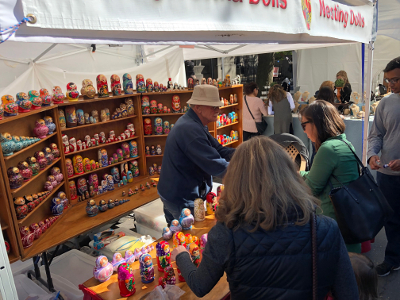
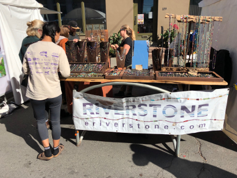
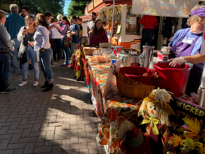
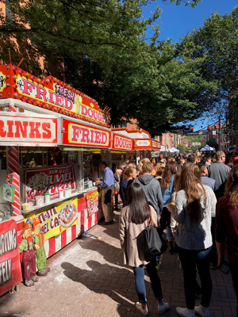
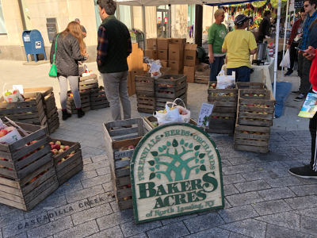
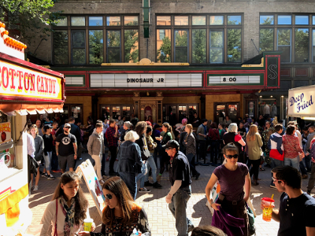
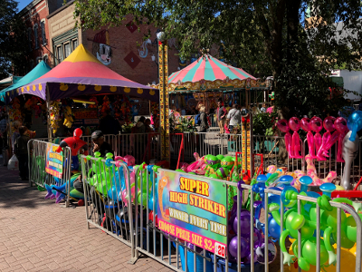
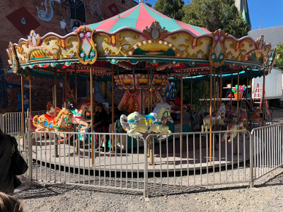

Vendors
Craft Vendors
- Kissed by the Sun Spice Company
- Laurel O'Brien Jewelry
- The Chop Shop Studio Chopshop Studio
- Elizabeth Lassing Jewelry
- Luna Sea Trading
- Golden Hand Design Golden Hand Designs
- Wise Guyz Gadgets
- Dave's Art Den
- riverstone jewelry
- Colin D. Young Photography
- Helena's Organic Garden
- Weathertop Farm
- What The Fork
- HRLMScreations
- Calli b.
- Gayane's Gifts + Crafts
- Positive Energy
- AOS Metals
- Crescent Moon Studio
- Hooked Productions
- Mill Hill Arts
- ClayFormed Artworks
- Elan Design Studio
- Malabar Glass
- Sugarhill Farm
- Pickled Punks Plush
- Leather and Lace
- On Hand Lotions
- Second Season Mittens
- Sunshine's Creative Designs
- Moon Rabbit Press
- S & J Woodcrafts
- Spirited Servers Gifts
- Two Twigs
- Glass by Kimberly
- Turquoise Terrapin
- Lake Bones
- The Ear Cuff Girl
- Wild Harvest Studio
- Weathered Heather Art Glass Jewelry by Heather Bivens
- Marika Chew Watercolor
- Paper Wolf Design
- Bon Fire Craft
- Mastercraft
- Walnut Ridge Designs
- CeCe&LuLu
- Schweigart's Sugar Shack
- 621 Creations
- Katie Vaz Design
- Drake Hill Woodworking
- Near Wild Heaven
- CM Goodenbury Photography
- Puccoon Raccoon Jewelry
- Saratoga Peanut Butter Company
- High Point Crafts
- Skelly Chic
- Sundaes Best Hot Fudge Sauce
- Mediterranean Basil Salt
- Kingsley Street Artisan Soaps
- Seneca Cottage Fudge Kitchen
- Carrie George Leather
- Elaan Greenfield
- Southwest Expressions
- Festive Face Painting by Cami
- Lularoe Lori O'Reilly
- Barried Treasures
- Indigo Moon
Food Vendors
- Kissed by the Sun Spice Company
- Laurel O'Brien Jewelry
- The Chop Shop Studio Chopshop Studio
- Elizabeth Lassing Jewelry
- Luna Sea Trading
- Golden Hand Design Golden Hand Designs
- Wise Guyz Gadgets
- Dave's Art Den
- Riverstone jewelry
- Colin D. Young Photography
- Helena's Organic Garden
- Weathertop Farm
- What The Fork
- HRLMScreations
- Calli b.
- Gayane's Gifts + Crafts
- Positive Energy
- AOS Metals
- Crescent Moon Studio
- Hooked Productions
- Mill Hill Arts
- ClayFormed Artworks
- Elan Design Studio
- Malabar Glass
- Sugarhill Farm
- Pickled Punks Plush
- Leather and Lace
- On Hand Lotions
- Second Season Mittens
- Sunshine's Creative Designs
- Moon Rabbit Press
- S & J Woodcrafts
- Spirited Servers Gifts
- Two Twigs
- Glass by Kimberly
- Turquoise Terrapin
- Lake Bones
- The Ear Cuff Girl
- Wild Harvest Studio
- Weathered Heather Art Glass Jewelry by Heather Bivens
- Marika Chew Watercolor
- Paper Wolf Design
- Bon Fire Craft
- Mastercraft
- Walnut Ridge Designs
- CeCe&LuLu
- Schweigart's Sugar Shack
- 621 Creations
- Katie Vaz Design
- Drake Hill Woodworking
- Near Wild Heaven
- CM Goodenbury Photography
- Puccoon Raccoon Jewelry
- Saratoga Peanut Butter Company
- High Point Crafts
- Skelly Chic
- Sundaes Best Hot Fudge Sauce
- Mediterranean Basil Salt
- Kingsley Street Artisan Soaps
- Seneca Cottage Fudge Kitchen
- Carrie George Leather
- Elaan Greenfield
- Southwest Expressions
- Festive Face Painting by Cami
- Lularoe Lori O'Reilly
- Barried Treasures
- Indigo Moon
Farmers
- Blackduck Cidery
- Student Society of Horticulture(SoHo)
- The Piggery
- A J Teeter Farm
- Eve's Cidery
- Finger Lakes Cider House
- Baker's Acres
- Schoolyard Sugarbush
- Indian Creek Farm
- Robbies Produce
- Littletree Orchards (Apple Cider Donuts)
- Little Grey Bakery
- CreamCycle
- Ryan William Vineyard
- Crooked Carrot
- Bellwether Hard Cider
- Little Farm Bakery
- Wagner Vineyards / Wagner Valley Brewing Co.
- Laughing Goat Fiber
- Thousand Islands Winery
- Lakeland Winery
- Maple River Syrup Company
Performance Schedule & Other Attractions
- 
- 
-

- 
- 
- 
- 
- 
- 